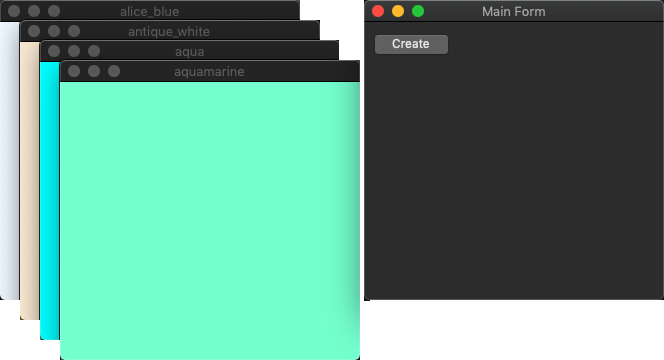

|
xtd
0.2.0
|
Loading...
Searching...
No Matches
colored_forms.cpp
demonstrates the use of xtd::forms::form control with unicode text.
- Windows


- macOS


- Gnome


#include <xtd/forms/application>
#include <xtd/forms/form>
#include <xtd/forms/screen>
using namespace xtd;
using namespace xtd::collections::generic;
using namespace xtd::drawing;
using namespace xtd::forms;
auto main() -> int {
auto form_color = known_color::alice_blue;
auto form_main = form::create("Main Form", point {screen::primary_screen().working_area().width - 340, 40});
create_button.click += delegate_ {
auto colored_form = new_ptr<form>();
colored_form->text(enum_object<>::to_string(form_color)).back_color(color::from_known_color(form_color)).visible(true);
colored_forms.push_back(colored_form);
form_color = form_color != known_color::yellow_green ? as<known_color>(as<int>(form_color) + 1) : known_color::alice_blue;
};
application::run(form_main);
}
Represents a strongly typed list of objects that can be accessed by index. Provides methods to search...
Definition list.hpp:79
static xtd::drawing::color from_known_color(xtd::drawing::known_color color)
Creates a xtd::drawing::color class from the four ARGB component (alpha, red, green,...
static void run()
Begins running a standard application message loop on the current thread, without a form.
@ alice_blue
A system-defined color.
Definition known_color.hpp:25
@ yellow_green
A system-defined color.
Definition known_color.hpp:305
#define delegate_
The declaration of a delegate type is similar to a method signature. It has a return value and any nu...
Definition delegate.hpp:900
ptr< type_t > new_ptr(args_t &&... args)
The xtd::new_ptr operator creates a xtd::ptr object.
Definition new_ptr.hpp:24
The xtd::collections::generic namespace contains interfaces and classes that define generic collectio...
Definition comparer.hpp:16
The xtd::drawing namespace provides access to GDI+ basic graphics functionality. More advanced functi...
Definition actions_system_images.hpp:10
The xtd::forms namespace contains classes for creating Windows-based applications that take full adva...
Definition texts.hpp:219
The xtd namespace contains all fundamental classes to access Hardware, Os, System,...
Definition abstract_object.hpp:8
Represents an ordered pair of integer x- and y-coordinates that defines a point in a two-dimensional ...
Definition point.hpp:54
xtd::string to_string() const noexcept override
Returns a xtd::string that represents the current object.
Definition enum_object.hpp:172
Generated on Wed Aug 20 2025 10:16:39 for xtd by Gammasoft. All rights reserved.